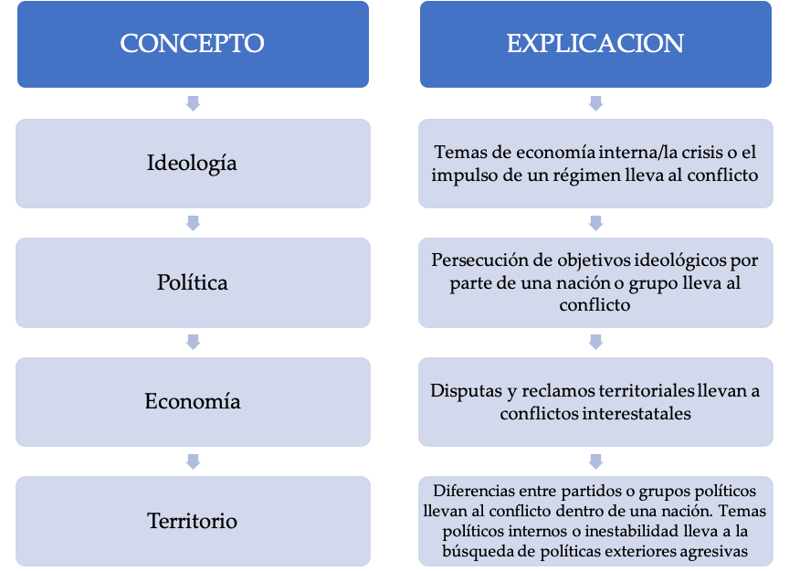
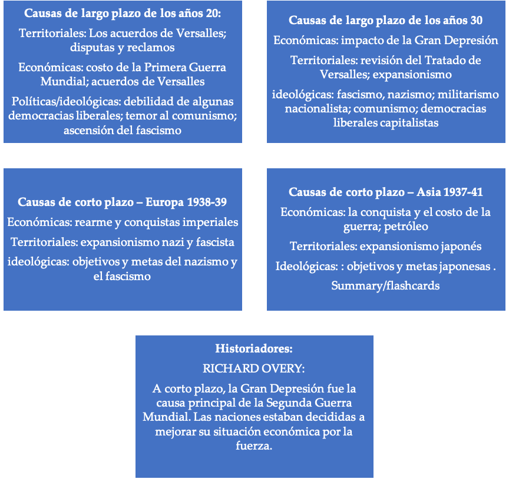
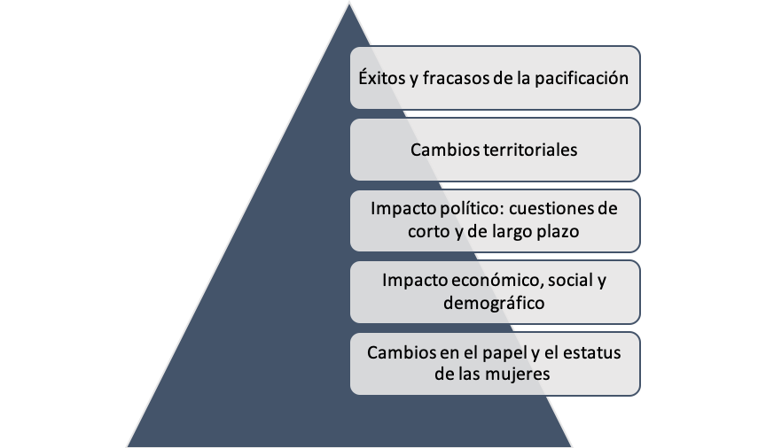
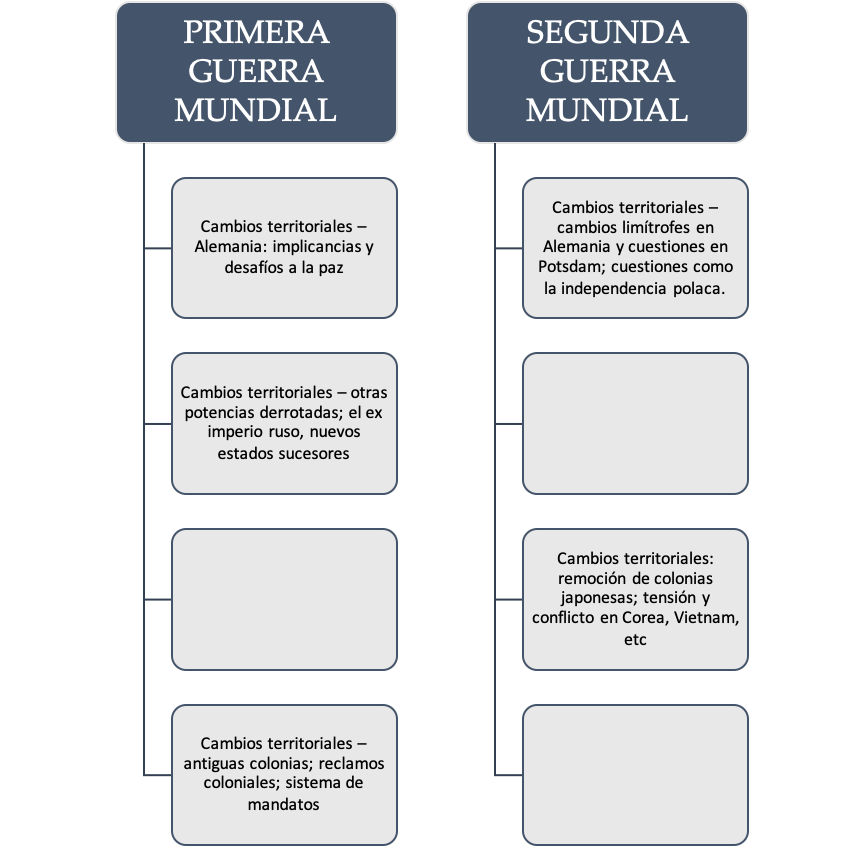

IB Docs (2) Team
IB Docs (2) Team

5. La Segunda Guerra Mundial: Planifcación de ensayos para la prueba 2

Esta página contiene planificaciones y actividades de redacción de ensayos sobre la Segunda Guerra Mundial.
Tarea Uno
ENFOQUES DE APRENDIZAJE: Habilidades de pensamiento
Al considerar las causas de las guerras para la Prueba 2, deberás comprender cómo se aplican los siguientes conceptos relacionados con los estudios de casos que has abordado.
Causas ideológicas
Causas políticas
Causas económicas
Causas Territoriales
Otras causas
De a dos, hagan coincidir la explicación del esquema con el concepto correspondiente en la tabla siguiente

Tarea Dos
ENFOQUES DE APRENDIZAJE: Habilidades de pensamiento
Los términos de instrucción de una pregunta de ensayo te dicen cómo enfocar y estructurar tu ensayo.
Comprueba tu comprensión de los términos de instrucción a continuación y luego haz la actividad a continuación
Comparar - Exponer las semejanzas
Contrastar - Exponer las diferencias
Comparar y contrastar - Exponer las semejanzas y las diferencias
Ejemplo: Comparar y contrastar el papel del poder aéreo en dos guerras del siglo XX.
Discutir - Presentar una crítica equilibrada y bien fundamentada e incluir una serie de argumentos [enfoque temático]
Ejemplo: Discutir los efectos sociales y económicos de una guerra del siglo XX.
Evaluar - considerar los puntos fuertes y débiles
Ejemplo: Evaluar el papel de la tecnología en la determinación del resultado de dos guerras del siglo XX.
Examinar - considerar un argumento y las interrelaciones de diferentes maneras
Ejemplo: Examinar el papel de la economia en la causa de dow guerras del siglo XX
En qué medida - dar argumentos a favor y en contra
Ejemplo: ¿En qué medida fueron las disputas territoriales la causa de una guerra interestatal del siglo XX?
Actividad
De a dos, elaboren preguntas de Prueba 2 para la Segunda Guerra Mundial usando los términos de instrucción, el contenido prescrito y los temas para el Tema 11.
Tarea Tres
ENFOQUES DE APRENDIZAJE: Habilidades de pensamiento y autogestión
De a dos, repasen las causas a largo y a corto plazo de la Segunda Guerra Mundial. Pueden usar el resumen a continuación
Causas temáticas/conceptuales de la Segunda Guerra Mundial

Tarea Cuatro
ENFOQUES DE APRENDIZAJE: Habilidades de pensamiento
De a dos, elaboren el esquema de la siguiente pregunta de ensayo utilizando los apuntes de repaso:
Discuta el impacto de factores de corto y de largo plazo en el estallido de una guerra del siglo XX.
Tarea Cinco
ENFOQUES DE APRENDIZAJE: Habilidades de pensamiento
De a dos, repasen el esquema de ensayo que usa a la Segunda Guerra Mundial como estudio de caso y que se encuentra a continuación
¿En qué medida fueron importantes los factores económicos en causar una guerra interestatal del siglo XX?
Párrafo 1: Los efectos de la Primera Guerra Mundial fueron una causa económica a largo plazo de la Segunda Guerra Mundial, ya que hubo inestabilidad e inseguridad.
- Costo de la Primera Guerra Mundial; impacto del Acuerdo de Versalles - la debilidad de las economías europeas condujo a la inseguridad; los términos económicos del acuerdo debilitaron las nuevas democracias liberales y condujeron a la intervención militar directa de los franceses en 1923. Se socavó a la Sociedad de Naciones y la seguridad colectiva, que dependían de la economía de los Estados Unidos [fuera de la Sociedad].
Párrafo 2: La Gran Depresión que afectó a todo el mundo en la década del 30 fue la causa económica más importante de la Segunda Guerra Mundial, ya que provocó el colapso del comercio internacional, inestabilidad y crisis internas.
- El ascenso de Hitler está directamente relacionado con el aumento del desempleo alemán. Detalles del impacto económico de la depresión en Alemania, los préstamos de EE.UU., etc.Las acciones de Hitler en los años 30, como el rearme, el Anschluss, y la expansión hacia el Este, fueron motivados económicamente.
- La Italia de Mussolini, aunque menosafectada por la Gran Depresión, también fue impulsada por motivos económicos para invadir Abisinia en 1935, ya que su estado corporativo estaba fracasando. Una guerra de conquista en África Oriental prometía posibles ganancias materiales y una distracción de los asuntos internos.
- La economía de Japón también fue devastada por la Gran Depresión: la seda, los préstamos de EE.UU., etc.La invasión japonesa de Manchuria en 1931 fue motivada económicamente para obtener materias primas, mercados, etc.La invasión japonesa del sudeste asiático fue motivada económicamente para mantener la guerra en China después de 1940, y el ataque a Pearl Harbor fue impulsado económicamente por el petróleo.
Párrafo 3: Además...
- Podría decirse que la incapacidad de la Sociedad de Naciones para responder eficazmente a los actos de agresión y expansión se debió a su dependencia de las sanciones económicas... Gran Bretaña y Francia también estaban motivadas económicamente para apaciguar a los estados agresores debido a cuestiones de economía interna...
- El lobby aislacionista de los EE.UU. estaba motivado económicamente... El activo económico clave del Japón, la visión de que el Japón traería un buen orden para los negocios en China... retrasó las sanciones económicas...
Párrafo 4: Sin embargo, los factores ideológicos también fueron una causa principal de la Segunda Guerra Mundial ya que las ideologías extremistas como el nazismo tenían objetivos que sólo podían ser alcanzados a través de la guerra...
- La ideología nazi pretendía unir a todos los alemanes/arios para crear un imperio dominado por el Tercer Reich en Europa.Identificó a los eslavos como "subhumanos" y se dirigió a conquistar países del Este y convertir a los eslavos en una raza de esclavos para el Tercer Reich.El foco principal de la ideología nazi era la destrucción del comunismo y la URSS.Una vez en el poder, Hitler persiguió sus objetivos ideológicos... desde las acciones de los años 30 hasta la invasión de Polonia en 1939.
- El fascismo italiano, como el nazismo, también promovió la guerra y la conquista, y Mussolini se propuso crear un gran imperio italiano a través del conflicto.Ideológicamente la guerra era buena para la sociedad y, por lo tanto, en la década del 30 persiguió sus objetivos ideológicos... acontecimientos de 1935, 1936... la ideología fue un factor impulsor para unir a la Alemania nazi y a la Italia fascista y llevó al fin del poder de la Sociedad de Naciones, el frente de Stresa etc.
- Los militaristas japoneses se motivaron cada vez más ideológicamente aliándose con las potencias fascistas en el Pacto Anti-Comintern. Actitud hacia otros asiáticos, justificaciones para la expansión del control en China, acciones en China y territorios ocupados, Pacto Tripartito.
Párrafo 5: También se podría argumentar que la política británica de apaciguamiento fue impulsada por el temor a la ideología comunista.
- También podría argumentarse que la política británica de apaciguamiento fue impulsada por el miedo a la ideología comunista... referencias a: apaciguamiento de la expansión hacia el este, Munich... intervención en España, fracaso en trabajar con la URSS en el Frente Popular antifascista.Además, había limitaciones políticas significativas para las democracias liberales, por ejemplo, el impacto de la opinión pública y la búsqueda del apaciguamiento y la neutralidad.La preocupación de los Estados Unidos por la posibilidad de que aumentara la influencia soviética en China, el Partido Comunista Chino de 1921, etc.El papel de la URSS comunista, la ideología del capitalismo occidental, el cambio a un acuerdo con Hitler - Pacto Soviético Nazi.
Párrafo 6: Sin embargo, también se podría argumentar que las causas de la Segunda Guerra Mundial fueron las reivindicaciones territoriales más tradicionales y las ambiciones...
- Elementos territoriales del Acuerdo de Versalles; referencias a las controversias territoriales de los años 20 en Europa y Asia.
- Objetivos y acciones de Hitler una vez en el poder - revisar las cláusulas territoriales de Versalles 1934-38; objetivos y acciones para ganar Lebensraum - espacio vital 1938-39; mayor hegemonía de las ambiciones imperiales en Europa, imperio de ultramar
- Objetivos y acciones de los italianos la década del 30: expansión territorial del imperio en el África oriental; espacio vital; dominación en Mediterráneo y los Balcanes
Tarea Seis
ENFOQUES DE APRENDIZAJE: Habilidades de pensamiento
En la Prueba 2 se pide a menudo que se consideren dos estudios de casos. De a dos, seleccionen otra guerra relevante que hayan estudiado y utilicen algunas de las ideas del esquema anterior para desarrollar un plan de ensayo para la siguiente pregunta:
"Los factores económicos fueron la causa más significativa de las guerras del siglo XX". Con referencia a las dos guerras, discuta esta afirmación.
Consideren:
- El papel de los factores económicos a largo plazo en causar la Segunda Guerra Mundial
- Papel de los factores económicos a corto plazo en causar la Segunda Guerra Mundial
- Función de los factores económicos en la causa xx [otro estudio de caso]
¿Qué otros factores condujeron a cada uno de estos conflictos? Se podrían utilizar otros factores para ofrecer un cierto "equilibrio" a la discusión de la afirmación en la pregunta.
Tarea siete
ENFOQUES DE APRENDIZAJE: Habilidades de pensamiento
De a dos, planifiquen los siguientes ensayos usando la Segunda Guerra Mundial como ejemplo:
- Examine el papel de la ideología en la causa de dos guerras interestatales del siglo XX.
- "Las guerras son generalmente causadas por disputas territoriales". Con referencia a dos guerras del siglo XX, evalúe la validez de esta afirmación.
Tarea ocho
ENFOQUES DE APRENDIZAJE: Habilidades de pensamiento
De a dos, usando la Segunda Guerra Mundial como su estudio de caso, completen un plan de ensayo detallado para la siguiente pregunta. (Haga clic en el ojo de abajo para encontrar las afirmaciones de apertura de los párrafos para ayudarles a empezar).
Examine el papel de la guerra terrestre para determinar el resultado de dos guerras entre estados.
Nota: "Examinar" - requiere que explores el tema de las preguntas de diferentes maneras / a través de diferentes lentes.
Introducción: Indiquen que su estudio de caso será la Segunda Guerra Mundial y la guerra xx. Expliquen sus principales puntos temáticos a través de los cuales examinarán el papel de la guerra en tierra para determinar el resultado, incluyendo la idea de que el resultado final también fue definido por los acontecimientos en la guerra en el mar y en el aire.
Párrafo 1: La guerra en tierra definió el resultado de la Segunda Guerra Mundial en Europa...
Párrafo 2: Además, también se podría argumentar que la guerra en tierra fue importante para determinar el resultado de la guerra en Asia...
Párrafo 3: La guerra en la tierra también fue importante para determinar el resultado de la guerra xx...
Párrafo 4: Sin embargo, el éxito de los aliados en la guerra terrestre puede haber sido determinado por la guerra aérea en la Segunda Guerra Mundial...
Párrafo 5: Además, la victoria aliada en la Segunda Guerra Mundial puede haberse basado en el éxito de la guerra en el mar, que a menudo fue clave para librar la guerra en tierra...
Párrafo 6: De hecho, en el conflicto xx la guerra naval fue un factor importante en el resultado...
Tarea Nueve
ENFOQUES DE APRENDIZAJE: Habilidades de pensamiento y autogestión
Revise las consecuencias de la Segunda Guerra Mundial y organice notas detalladas bajo los siguientes temas.

Tarea diez
ENFOQUES DE APRENDIZAJE: habilidades de pensamiento
“Los cambios territoriales fueron el desafío más importante para el éxito de la paz.” Discuta con referencia a las consecuencias de dos guerras del siglo XX.
La tabla de abajo utiliza la Primera y Segunda Guerra Mundial como estudios de caso, y puede ser usada como punto de partida para la planificación del ensayo:

 Twitter
Twitter
 Facebook
Facebook
 LinkedIn
LinkedIn